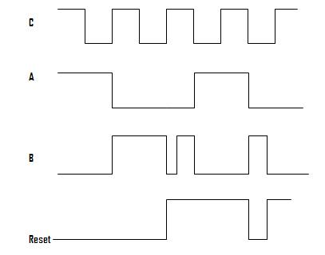

Design Of D-Flip Flop Using Verilog
1. Does the order of input and output ports in the argument of module matters?
2. Which of the following loops are supported by verilog?
3. What defines the beginning and end of a loop
4. What defines high impedance state or floating state in verilog?
5. In the following figure A is input and B is output of inverter and C is clock. Tell whether inverter is working synchronously or asynchronously? 
6. In the above figure, tell whether inverter is working on positive edge or negative edge of clock?
7. In the following figure tell whether reset is synchronous or asynchronous? 
8. What is the similar system task in verilog as printf in C?
9. In the figure given in ques7, tell whether it is a positive edge reset or negative edge?
10. Can we include one source file in another in verilog?